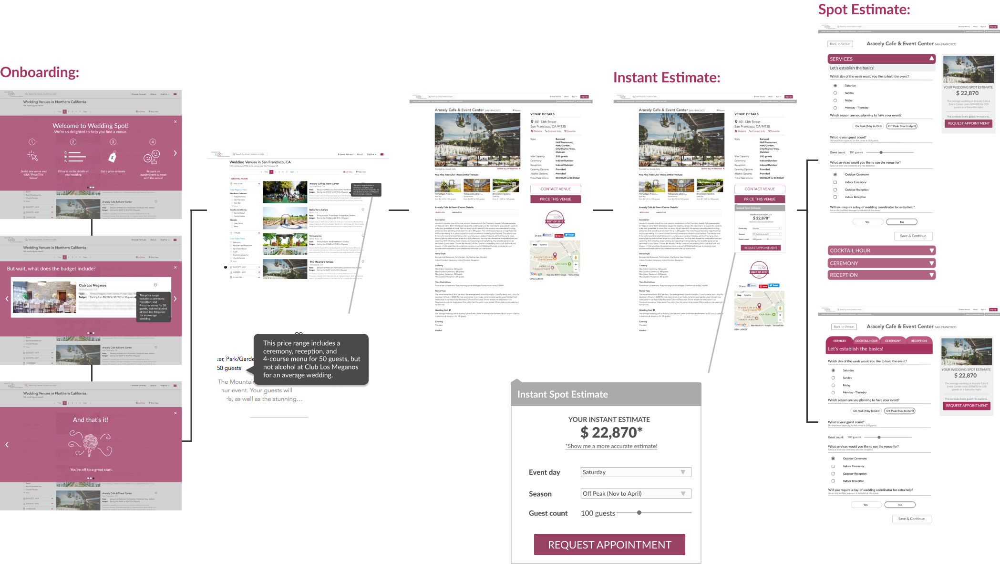
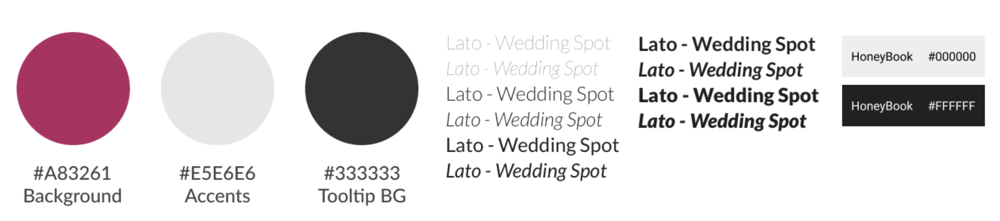

Honeybook / brief
Designing onboarding and price estimation tools for a venue search platform to help people understand their budget wedding planning.
Role:
Design consultant through Berkeley Innovation with Sophia Morgan, Shrey Malhotra and Holly Luo. Mentored by Miranda Clemmons
Time:
September 2017 - December 2017
Responsibilities:
User research, competitive analysis, ideation, high-fidelity iteration, prototyping, user testing
Deliverables:
Figma mocks, Invision prototype, research findings
View our public project poster here.
Context
Wedding Spot, an online wedding venue search platform that was acquired by Honeybook, works like Airbnb but for wedding venues.
While there are other similar venue search engines, Wedding Spot is unique because it offers a very detailed and highly accurate price estimate tool for people who want a quick quote on a specific venue.
For this project, we wanted to improve the experience of venue searching by designing an onboarding flow and rethinking Wedding-Spot's Spot Estimate tool. While we worked collaboratively in a team of 3 other student designers from different disciplines with the head of product at Honeybook, I led the user research sprint and designed for the Spot Estimate tool.
This project was completed in fall of 2017, and it's incredibly exciting to see the site now updated with a few recommendations we explored during our design process (accordian style spot estimate and onboarding chatbot).
The problem
Planning a wedding can be incredibly stressful. Current tools can be confusing for people who are just starting to look for wedding venues because they feel unfamiliar with the process.
The search for wedding venues is a daunting process, and especially for newly engaged couples, completing long questionnaires for tools like WS's Spot Estimate can be frustrating. From HoneyBook's previous user tests with the current Wedding-Spot site, we learned that couples are anxious and overwhelmed by the process. There was no existing method of getting the user familiarized with the process.
Additionally, for users who have little to no information about their preferences yet (which is the case for most casual browsers), there is no motivation to fill out the Spot Estimate. There was a drop off rate in the user search journey. We hypothesized that the lack of an onboarding system contributed to user frustration.
The existing landing page (left) and Spot Estimate page (right) for Wedding Spot. While the search result page was considered out of scope for our project, we focused on designing for the venue listing pages and the Spot Estimate tool.
After synthesizing past usability tests and discussing with our client, we came up with the following problem statements to narrow down the scope of our project and better understand our target users:
1. How might we educate the user on how to use WS to reduce negative feelings associated with venue searching?
2. How might we present and receive the most important information to and from the user to make an accurate estimate?
Research approach
We used these questions to drive our design decisions for developing an onboarding flow and redesigning the Spot Estimate tool.
As the sprint leader for the user research portion, I led our efforts to understand WS's users through synthesizing HoneyBook's existing Google Analytics data and LookBack user tests, developing discussion guides, researching competitors, and conducting user interviews with card sorting activites.
Sketching a quick user flow of how someone might draft a new moderation rule, starting with entry to the interface and selecting conditions, types and actions.
Our card-sorting results also gave us a better idea of the order of importance for features in the Spot Estimate tool, leading to insights on how to redesign the way information is displayed for the tool.
Synthesis and ideation
While I cannot share details about all our design decisions and research insights, our high-level goals were to cater to the user journey needs we discovered through research. We focused on how to surface the right information at the right time for different users.
Ideating on different entry points for pricing tools.
Ideating on a faster, abridged format pricing tool to cater to people who were just beginning their search journey.
After iterating on different opportunities and syncing with our client to refine the solutions. While I can't share all the details of our iterations and decisions, we proceeded with prototyping and testing to land on the final flows and designs.
Hi-fi mocks of the two versions of the final Spot Estimate.
Our refined hi-fi user flow, including the onboarding that my other team members designed for.
A UI library to communicate the typography and branding for our designs.
Reflections
Working with Berkeley Innovation and HoneyBook was my first professional, non-hackathon experience with product design. I learned so much about the human-centered design pipeline and e-commerce platforms. Here were my personal key takeaways from this project:
This was taken at our final showcase for Berkeley Innovation, with our team mentor (Miranda Clemmons) proposing with a box of chicken nuggets. Super grateful to have worked with these amazing student designers!
1. For user research, we only collected ~26 survey responses. Our insights would look very different with a larger sample size, and could potentially change our design goals with the onboarding process.
2. For user testing, we only conducted 4 sessions (wanted specifically ‘freshly’ engaged couples). There were general trends, but it was difficult to understand what the best option was because each participant reacted very differently.
3. There will always, always, always be tradeoffs between business goals and design goals, and it is my responsibility to argue for that balance to the best of my ability.
4. Everyone has different styles of leadership, and scheduling issues sometimes result in meeting at 10 PM on a Thursday night (also, late night meetings are objectively better when motivated with candy and snacks 😀).
→ Next up: Disqus moderation tools